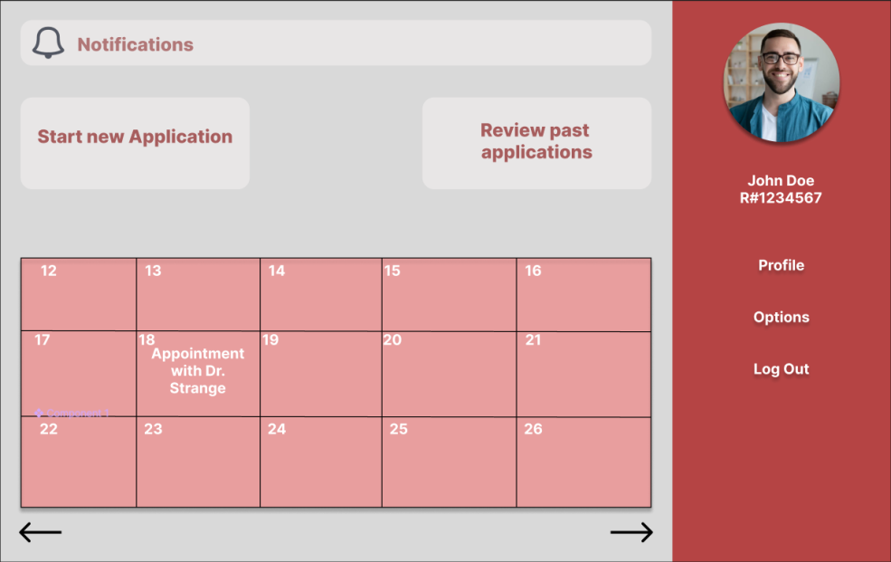
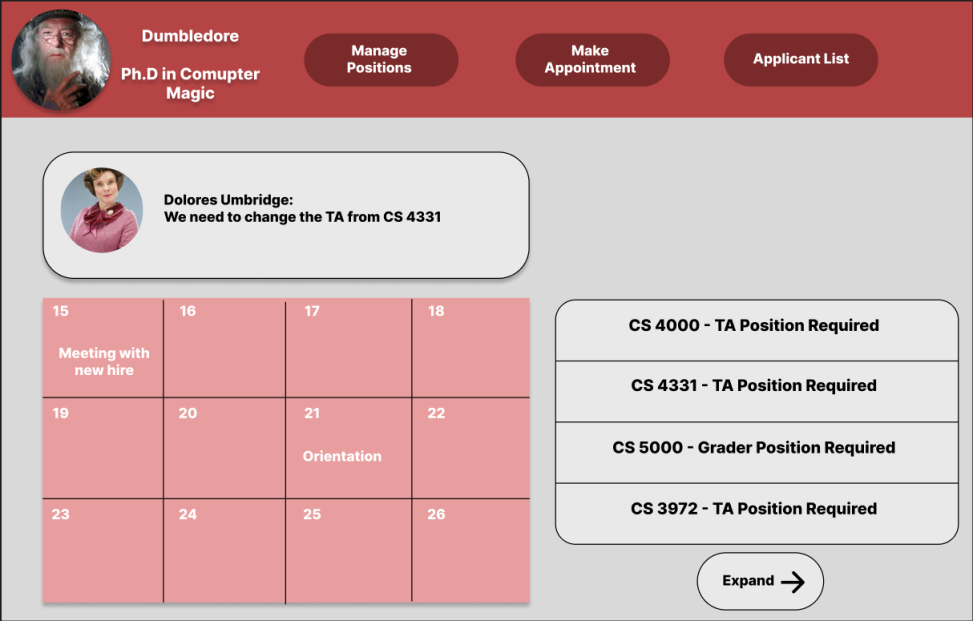

Academic Aide
About Our Project
Academic Aide is a comprehensive software solution designed to streamline the TTU TA and grader assignment processes. It efficiently manages the assignment of teacher assistants (TAs) and graders, facilitates transparent communication among committee members responsible for TA and grader selection, offer students a user-friendly portal for submitting applications, and an appointment system for students and committee members to meet online or in person.
Interviews
Right now, they fill out a form for TAs, but it's a little different for each one. I mean, it doesn't really matter too much. This is how they choose who gets what position. So, there's a form that's turned in, like an application, to a committee. This committee goes through and then assigns the TAs, so they put it on a spreadsheet. They send me the spreadsheet, and then I have to start notifying each and every one of them. "Congratulations, you've been selected as a TA," and then they have to schedule. I set up different orientations, and it didn't used to be like that until this year. I changed it; I was like, "No, we're all coming at one time, not doing this one by one." Yeah, so now they come for orientation, I put them through an orientation, do paperwork, and then they're hired.
What are the constraints when selecting a TA and grader?
I really don't know; that's a Michael Shin question because he's the one. But I do think GPA is important, probably whether they have worked for us before, you know, and we like them, and they worked out well.
So you hire outside of TTU?
No, only students with master's degrees. It has to be master's and above, but we prefer PhDs. Mainly because, to be a teaching assistant and a grader, you have to have access to Blackboard, and Blackboard is giving us a really hard time. We have some that can't even get access to it. If you're an MS student, they don't want you grading in a graduate course.
What if anything would be a must-need function/feature that would make selecting TA’s and graders more efficient?
I'm probably not answering your question directly. The worst part about the system is if they email me and everybody is CCed, and then somebody else answers, and then somebody else answers, but in between, I've had 30 other emails because I get a lot of emails. I have 8000 in my inbox right now, so they get pushed down, and I might miss it; that's a bad part of it.
So you think communication is one of the biggest problems?
Yes, that's the biggest issue. Communication is through email, which is good because that's how I communicate a lot, but at the same time, like I said, if it gets pushed down, you know, like it's scholarship time, within two hours, I had 150 emails come through. Well, if I had one about the TAs and graders and those 150 come through, I don't see that TA and grader one because it got pushed way down to the bottom. You know, when I'm still trying to go down my email list. So it's easily missed or not seen. If we had a streamlined system, that would be fantastic. I don't really select; that's up to Dr. Shin Lim Schaal. But they will email us and say, "OK, especially once they come up with their first list," and then I have to send them all a congratulations letter and an appointment for orientation. Then what starts happening is when my email back, then the students start emailing back going, "Oh, well, I've decided to defer to the spring." So then I have to email back to the committee and say, "Hey, we've got to replace this one." Well, then Dr. Chin might jump in and say, "Hey, we really need to find someone quickly." Well, then they're scrambling, and they find somebody, and then they send it to us, and we start over again.
What are the main details you look at when selecting a TA or grader?
I really don't know; that's another Michael Shen question because he's the one who will assign them. I think a lot of it will have to do with their level of education and if it's a class they might specialize in already, so they would know more about it. Sometimes, professors choose their own TAs." "Are there multiple people who manage TAs, RAs, and graders for CS courses?" "I take care of hiring and paperwork only, but I handle all the hiring by myself in the CS department."
How long does the process take currently?
They go through HR to get their approval. Then, my RA’s approvals will go through about nine levels of approval. It starts with me putting it in and submitting it. The chair approves it, the Dean's office has to approve it, research services have to approve it if they're paid on a grant, budgeting has to approve it, and if they're a grad student, the grad school has to approve it. Yeah, it goes through about nine levels of approval..
There are actually many factors to consider for TAs. Because we support them with a full assistantship, I'll try to explain it from both the financial and technical sides. From a financial perspective, hiring TAs and graders requires money, and the two positions are different in terms of cost. TAs are paid approximately $29,009 plus tuition fees, health insurance, and various benefits, which means they cost around $45,000 each as they are essentially like employees. On the other hand, graders are in hourly positions, so they cost the department less on an hourly basis. This financial aspect affects the number of tier positions and the number of grader positions we can have. From a technical perspective, the department offers a substantial number of courses. Roughly, we have close to 40 courses, including approximately 17-18 undergraduate courses, 4-5 elective courses, and about 18-19 graduate-level courses. To cover all these classes and provide grading support, we need a sufficient number of TAs and graders. The demand for manpower depends on the number of classes and their sizes. For instance, larger classes with over 150 students may require assigning two graders to handle the workload. Additionally, the expertise and background of graders play a crucial role. For example, if we need a grader for an operating system course, it would be ideal to find someone with expertise in operating systems. These factors all come into play when making decisions.
Can a TA or a grader be assigned to multiple classes?
In both cases, TAs and graders may work 20 hours a week, and the workload can vary. For instance, in a large class with 150 students, it might require 30 hours of grading. In such cases, we hire one grader for 20 hours and another grader for 10 hours in that specific class, allocating the remaining 10 hours to a different one. Ideally, we aim to select TAs and graders well before the semester starts. This is because many of our TAs and graders are international graduate students who need to complete paperwork for work and taxes. In terms of the timeline, the answer is always that the earlier, the better. However, it's not always possible. Sometimes, when we recruit TAs and graders early, they may change their commitments later, making it challenging to find replacements on time. Managing the pros and cons of the timeline is another significant challenge.
What are the constraints when selecting a TA and grader?
The main challenge we face is twofold. Firstly, we have a large number of graduate students, nearly 800 in total. Secondly, the University has a policy that TAs and graders cannot grade their classmates, which means that graders cannot be assigned to classes with overlapping students from their own courses. This constraint can be quite limiting. With approximately 18-19 graduate classes, if even one class overlaps with the students from another, we encounter difficulties in assignment.
What if anything would be a must-need function/feature that would make selecting TA’s and graders more efficient?
A software solution that can automate this process would be immensely helpful. First and foremost, it should be able to interface with the TTU system. This means the software should have access to essential data such as the R numbers, class schedules, student contact information, and ideally, their emails. By integrating with our system, we can leverage the data we already have. Moving forward, the software should allow us to evaluate candidates based on various criteria. This could include determining if the student is a doctoral or master's student, whether they have advisor support, the number of completed courses, GPA, language skills (particularly English), and technical skills. With this information, the software can assist us in selecting the most suitable candidates. From the department's perspective, we also aim to balance the support provided since these positions are expensive. When we hire individuals, we hope they can contribute to research efforts. Therefore, the software should provide a comprehensive view of all applicants, offering a more complete picture. We typically receive hundreds of applicants, which presents its own set of challenges. Ideally, the software should streamline the notification process. For instance, when we hire TAs and graders, it should allow us to send notifications efficiently to all candidates with a simple click. Moreover, the software can automatically track responses, helping us identify who has accepted the position. Thirdly, the software should facilitate the onboarding process. Assigning TAs and graders to the correct classes can be a complex task, and the software should assist in managing these assignments. In an ideal scenario, the software would handle all these processes and notifications. Another potential challenge is dealing with changes in commitment from hired individuals. In such cases, we need a quick and efficient way to find suitable replacements.
What are the main details you look at when selecting a TA or grader?
Michael Shin may provide a more detailed answer, but the ideal candidate would typically be a doctoral student who has completed the required coursework and passed an English proficiency test. Additionally, they should possess broad expertise and effectiveness, which we can verify by examining their transcript. Ideally, we would prefer candidates who have previously taken our courses, as they would be more likely to adapt easily to our grading and lecture style
How long does the process take currently?
Regarding the timeline, the entire process typically spans one to two months. To provide you with a more specific schedule, the process begins about one month before the semester starts when we start collecting all the applications. Next, we need to assess the class sizes, which can be somewhat time-consuming due to their dynamic nature. Finally, we encounter the recurring issue of TAs or graders changing their commitments, which necessitates continuous monitoring and the search for suitable replacements.
that's the process of selecting TAs, RAs, and graders, correct? Yes, indeed. In the case of RAs, the faculty will make the selection, as it's their decision. Your system may not be involved in selecting RAs. Regarding TAs, they are recommended by the faculty, and the department will then choose from these recommendations. However, concerning TA selections, it's related to the funding that the faculty possesses. Some faculty members have startup funding, which they receive when they join TTU. This funding is used to hire TAs. Therefore, your software might not play a role in TA selections either. For TAs, a committee reviews the qualifications and conducts background checks on the individuals recommended by the faculty, based on their applications and resumes. In the case of graders, they are usually selected from among seniors, meaning students who have been at TTU for at least two years or two semesters. Selection criteria include their GPA and their work experience as described in their CV.
From your perspective, how long does this whole process take?
We work as a team, a committee consisting of three members. The selection of TAs and graders can be a lengthy process because even after selecting someone, they may later choose to leave, necessitating a search for a replacement. This process can continue for two to three weeks, but it's challenging to estimate precisely when it will conclude.
How many people currently are in your team selecting and hiring TAs and graders?
We are a team of three people, three faculty members, working together to make assignments. Among us, one person takes on the role of the leader, while the other two provide support as needed.
Are there any sort of functions that you would require or would like to see?
I typically use Excel files for this task. Excel is convenient as it allows me to sort and perform functions based on criteria like GPA. Most of the necessary functions can be handled with Excel files.
Do you have any complaints with the system, the current system that you would like to see fixed?
Currently, we don't have any dedicated software to support these processes. My work mainly revolves around managing the data from the applications submitted by graders and TAs. This data is typically converted into Excel files, and I work within these files. If you were to develop software for this purpose, one important aspect to consider would be the ability to review and manage documentation associated with these processes.
How long in advance do you push for applicants?
We initiate this process roughly one month before the start of a new semester. About a month in advance, we announce the collection of applications for TAs and graders. Then, we begin the processing phase.
Before the semester begins, typically two to four weeks in advance (let's say at least four weeks), we have two categories to consider: TAs and graders. For TAs, their responsibilities are quite similar, but it's worth noting that TAs are exclusively PhD students. Master's students cannot serve as TAs at this time. So, for the TA role, it's primarily determined by the department, which means the number of TAs is initially fixed. However, it can be adjusted later based on student registration numbers. If a course has a large number of students, for example, sometimes up to 150, we may need more TA hours. Conversely, for smaller classes, we may assign fewer TAs or just one TA, depending on the size. The department provides the initial number of courses that are already determined well in advance, often a semester or a semester and a half ahead. With this fixed list of courses, we calculate the number of registered students. Based on this student count, we estimate how many TAs and graders we'll need. The number of TAs is typically set at this stage. Then, as we approach the beginning of the semester, we make the final assignments of TAs and graders to specific courses. At this point, it's important to note that PhD students can serve as TAs for graduate courses. Master's students, however, can only be assigned to undergraduate courses. However, due to the number of registered students in our department, there are instances where we assign master's students to graduate courses, usually based on the number of registered students. As the semester approaches, the number of registered students may fluctuate. Some students drop or add courses, so it's typically about two to three weeks after the semester has begun that we finalize the TA and grader assignments. This summarizes the entire process.
What are the main details that you look at when you're selecting a TA or a grader?
Certainly. In the case of both TAs and graders, a significant advantage is if they have previously taken the course they are assigned to. This familiarity means they are well-versed in the course content and structure, making them the preferred choice. However, not all TAs and graders have prior experience with the specific course they are assigned to. In such instances, we consider their background and preferences. We first inquire about their preferences. We ask them which courses they would like to be a TA or grader for. This allows us to consider their interests and expertise. Additionally, we gather information about their educational background, including the graduate courses they have taken and the undergraduate courses they are qualified to assist with. This information helps us match them with the most suitable courses. To summarize, the top priority is given to those who have taken the course before or have prior TA or grader experience in that course.
How long does the process currently take from when you start to pick people to having everyone ready?
Yes, this process indeed extends both before and after the semester begins. It typically spans about four to six weeks in total. Even after we initially assign TAs and graders, adjustments may still be necessary. Faculty members sometimes request changes, citing past performance issues with a previously assigned TA or grader. In such cases, we need to accommodate their requests and make changes accordingly. Another situation that can arise is a class hour conflict. Occasionally, faculty members prefer to have their assigned TA or grader present in their class. However, this can lead to time conflicts because TAs and graders also need to attend their own classes as students. When such conflicts occur, we must reassign TAs or graders to resolve the issue. This reshuffling process can be quite challenging, as changing one assignment can trigger a cascade of changes that affect many others.
What are the specific constraints you have when selecting a grader?
Indeed, the number of student registrations can change even after the semester begins, typically within the first one or two weeks, particularly around the last day or before the class add or drop deadline. This number of registrations remains dynamic. At the beginning of the semester, we make initial TA and grader assignments based on our best estimates. For example, we might allocate 20 hours, which is considered full-time, to a grader. However, some courses may only require 10 hours, so one grader might handle 20 hours' worth of work across two courses, 10 hours each. Initially, we might assume that a course has, say, 100 students, but in reality, it might have 150 students. In such cases, we need to make adjustments. So, we might have initially assigned 15 hours to one grader and 5 hours to another to cover the increased workload. Additionally, some TAs can work a maximum of 10 hours, not 20 hours. For instance, master's students might be limited to 10 hours or sometimes up to 20 hours, but typically it's 20 hours. Therefore, one master's student can serve as a grader for multiple courses. These adjustments are contingent on the actual number of registered students, which can change unexpectedly. For instance, what started as more than 100 students might dwindle down to 36. So, as the semester progresses, I need to continuously update the assignments. This involves monitoring the number of registered students and checking for any overlaps or conflicts in the assignments. In our department, we have a significant number of registered students, and the enrollment is quite high. As a result, the process of assigning TAs and graders becomes increasingly complex and requires ongoing updates.
Meeting Info
Date: 9/18/2023
Location: In-person (CS-department)
What we did: Group Interview with Kelly Cooper and planning of future interview targets
Date: 9/19/2023
Location: In-person (CS-department)
What we did: Group Interview with Chen Yong and project functions brainstorm
Date: 9/22/2023
Location: Online (Discord)
What we did: SRS assignments and analysis of interview logs
Date: 9/26/2023
Location: Online (Discord)
What we did: Finalizing SRS details and presentation slides.
Date: 9/28/2023
Location: Online (Discord)
What we did: Presentation practice and error checking..
Date: 10/02/2023
Location: In person (CS Building)
What we did: Started setting up GitHub npm and angular cli on personal dev environments.
Date: 10/04/2023
Location: In person (Library)
What we did: learned about source control and created our basic angular app.
Date: 10/06/2023
Location: In person (Library)
What we did: Started working on website components such as calendar and dropdown menu.
Date: 10/09/2023
Location: In person (CS Building)
What we did: Started working on basic page designs for stage 2 documentation.
Date: 10/11/2023
Location: In person (Library)
What we did: Started working on basic class, sequence, and use-case diagrams stage 2 documentation.
Date: 10/16/2023
Location: In person (Library)
What we did: Made progress to sequence diagrams for stage 2 and components.
Date: 10/18/2023
Location: In person (Library)
What we did: Made progress to all diagrams for stage 2 documentation.
Date: 10/19/2023
Location: In person (Library)
What we did: Made progress to low-fidelity diagrams and started low-fidelity mock-up visuals for stage 2.
Date: 10/23/2023
Location: In person (Library)
What we did: Worked on low-fidelity diagrams and mock-up visuals for stage 2.
Date: 10/25/2023
Location: In person (Library)
What we did: Started presentation, completed low-fidelity diagrams, and updated documentation for stage 2.
Date: 10/27/2023
Location: In person (Library)
What we did: Started implementation plan, completed low-fidelity mock-up visuals, and updated documentation and presentation for stage 2.
Date: 10/28/2023
Location: Online (Discord)
What we did: Updated all diagrams, mock-up visuals, implementation plan, documentation, and presentation for new actor: Student as per Professor Dang's request.
Date: 10/29/2023
Location: Online (Discord)
What we did: Completed last-minute details of stage 2 documentation and presentation.
Date: 10/31/2023
Location: In person (CS Building)
What we did: Corrected mistakes for stage 2 documentation.
Date: 11/03/2023
Location: In-person (Library)
What we did: Updated group website with current general project information.
Date: 11/06/2023
Location: In-person (Library)
What we did: Initiated Frontend and Backend development.
Date: 11/08/2023
Location: In-person (Library)
What we did: Continue with development, Database successfully created.
Date: 11/10/2023
Location: In-person (Library)
What we did: The authentification system page was finalized, and the Appointment API was implemented.
Date: 11/13/2023
Location: In-person (Library)
What we did: Dashboard development started, appointment system was revisited.
Date: 11/15/2023
Location: In-person (Library)
What we did: Connected the backend with Database, the connection of the frontend with the backend started .
Date: 11/17/2023
Location: In-person (Library)
What we did: Progress was made in the frontend, and the connection of the frontend with the backend continues .
Date: 11/18/2023
Location: In-person (Library)
What we did: Frontend progress made, design of homepage finished, extra tests of connecting frontend to backend .
Date: 11/20/2023
Location: In-person (Library)
What we did: Connected the backend with frontend successfully, and registration and login authentification implementations were completed .
Visuals
 Our Team
Name:
Roger Rodulfo
Email: rrodulfo@ttu.edu
Position:
Full Stack Developer
Name:
Daniel Diaz
Email: dia36200@ttu.edu
Position:
Back-End Developer
Name:
Eduardo Gonzalez
Email: edgzz.gonzalez@ttu.edu
Position:
Front-End Developer
Name:
Jared King
Email: jaredkin@ttu.edu
Position:
Front-End Developer